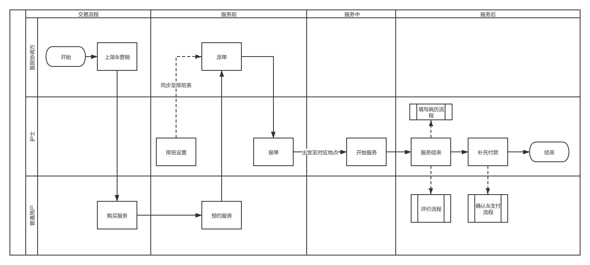
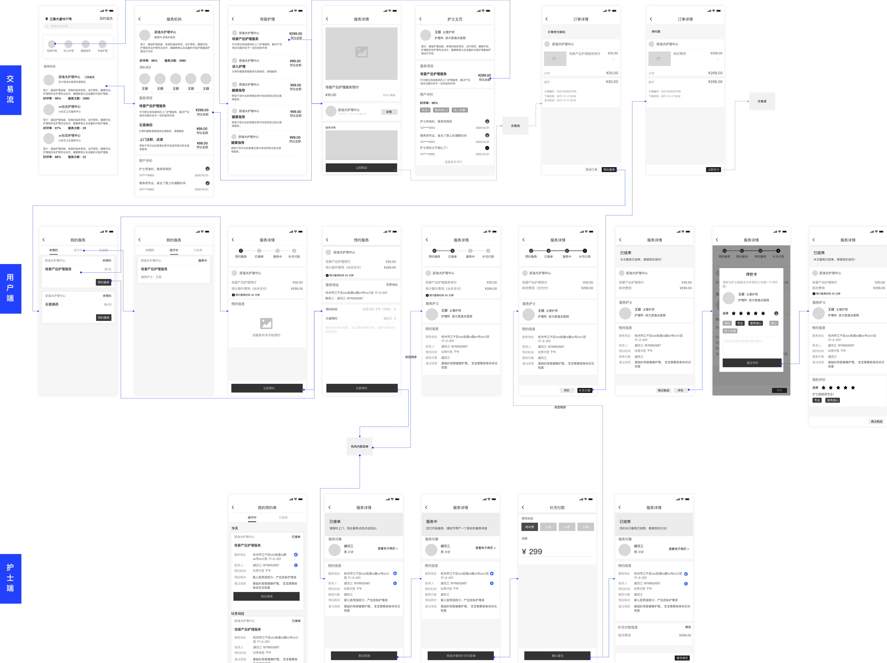
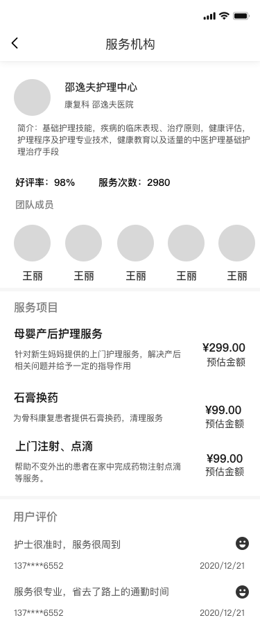
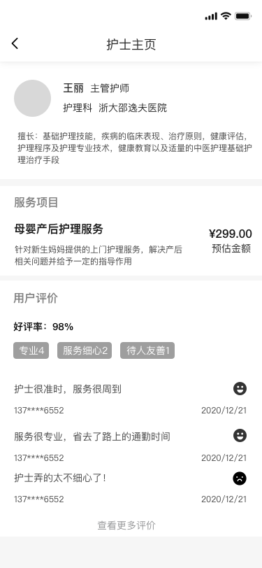
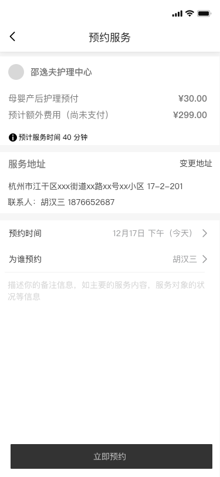
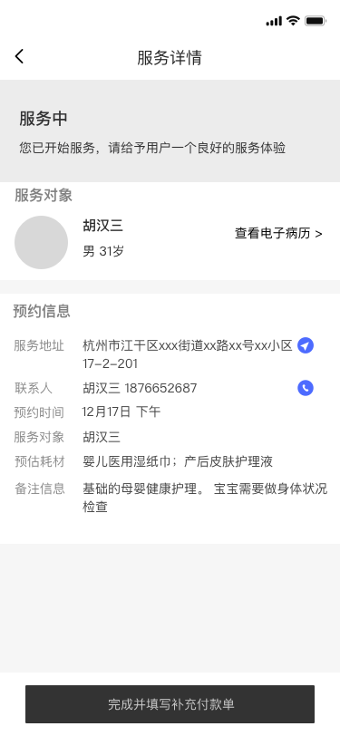
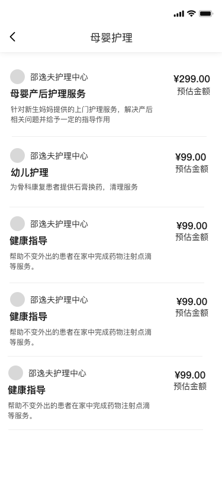
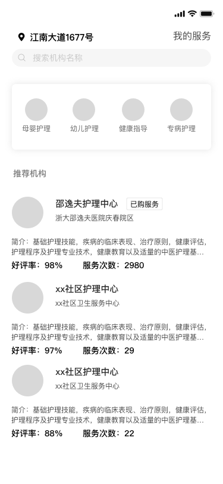
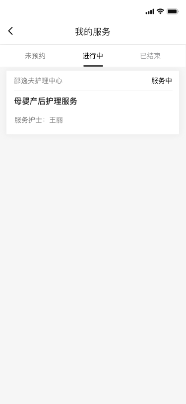

Interaction Design
交互设计
核心流程设计 - 服务泳道图
通过泳道图展示医院协调方、护士、用户三方在交易流程、服务前、服务中、服务后各阶段的协作关系与交互节点。

用户服务表象设计
针对不同类型用户的服务入口和信息呈现策略。
针对已有明确需求的用户
显示对应的用户服务表，包含：
- 宠物信息 - 服务对象基本资料
- 服务信息 - 已订阅/进行中的服务
- 服务预约 - 快捷预约入口
- 订单支付 - 待支付/已支付订单
支持场景导航查询，线下已订阅过服务的用户（线下就诊、挂号等）可快速找到对应服务
针对有类似方向的用户
聪明发现 + 分层推送：
- 智能推荐 - 基于浏览历史推荐相关服务
- 附近服务 - LBS 定位推荐附近机构
- 热门服务 - 展示高频预约的服务项目
- 新人专享 - 首次使用优惠引导
降低决策成本，帮助用户快速找到适合的护理服务
护士服务表象设计
以时间轴的任务表形式将护士接触的任务进行分类，满足护士当下场景需求。
任务时间轴管理
按时间维度展示护士的服务任务：
- 今日任务 - 当天待服务订单，按时间排序
- 待确认订单 - 新分配的预约请求
- 进行中服务 - 当前正在执行的任务
- 历史记录 - 已完成服务的归档查询
清晰的时间轴视图帮助护士合理安排工作，避免遗漏或冲突
服务执行工具
服务过程中的核心操作支持：
- 患者信息 - 查看病历、联系方式、历史服务
- 服务记录 - 填写服务过程、用药记录
- 补充付款 - 创建额外费用单据
- 服务统计 - 收入明细、好评率、完成量
一站式工具集成，减少护士在多个系统间切换的时间成本
交互原型总览

完整交互原型：包含用户端、护士端双端设计
关键页面设计

服务机构主页
好评率 + 服务次数双指标建立信任

护士主页
职称 + 所属医院背书专业度

预约服务页
预付 + 预估费用分开展示

服务详情页（用户端）
四阶段进度条，状态一目了然

服务详情页（护士端）
电子病历快捷入口

评价页
快捷标签 + 文字评价
更多页面展示

服务列表页
清晰的服务分类展示

护理主页
服务入口与推荐

我的服务
服务进度实时追踪
设计亮点总结
| 设计策略 | 具体实现 | 解决的问题 |
|---|---|---|
| 针对已有明确需求 | 显示对应的用户服务表，支持场景导航查询 | 快速匹配服务 |
| 针对有类似方向的用户 | 聪明发现分层推送 | 降低决策成本 |
| 服务进度信息透出 | 预约后服务自动添加至用户服务表，持续曝光 + 代办提示 | 服务状态可见 |
| 服务进度消息提示 | 给予用户明确的服务过程感知，适时营销提示或消息告知 | 减少焦虑 |